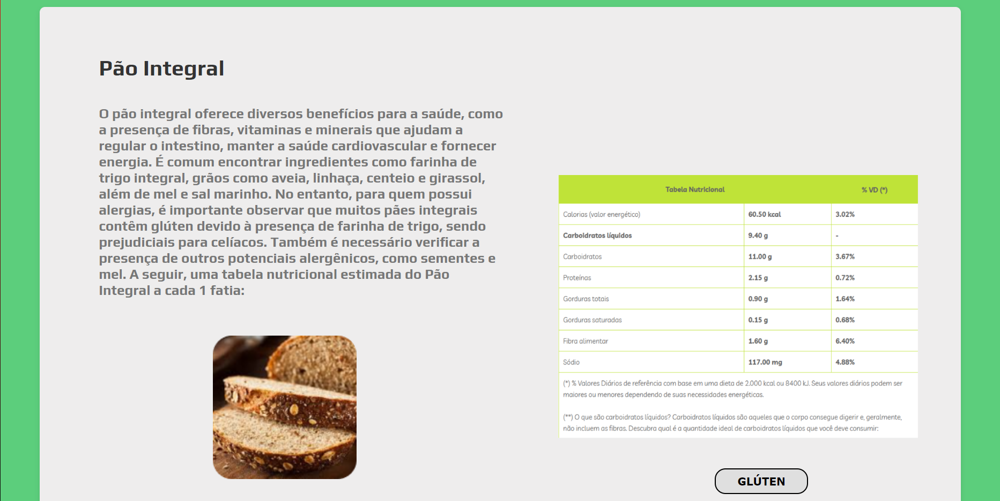

FoodGuardian é um aplicativo que é útil para pessoas com alergias ou intolerâncias alimentares, a ferramenta é um acesso único e dedicado para essas pessoas, no quesito de informar e alertar as pessoas que possuem essa limitação alimentar dos alimentos que ela irá consumir.
Nosso principal objetivo é informar o usuário através do aplicativo de forma direta, rápida e segura dos componentes de qualquer alimento que o mesmo quiser pesquisar, para assim tirar suas dúvidas. Evitar do usuário ter que fazer uma pesquisa na web referente a suas dúvidas, pois assim, os resultados podem não ser diretos, demora para juntar dados de pesquisas e formular uma informação concreta e nem sempre tudo que está por aí é seguro!
